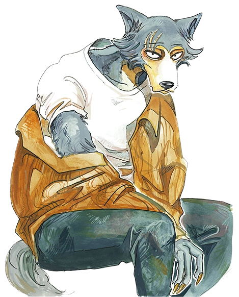
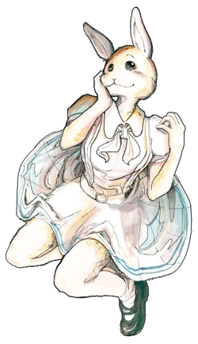
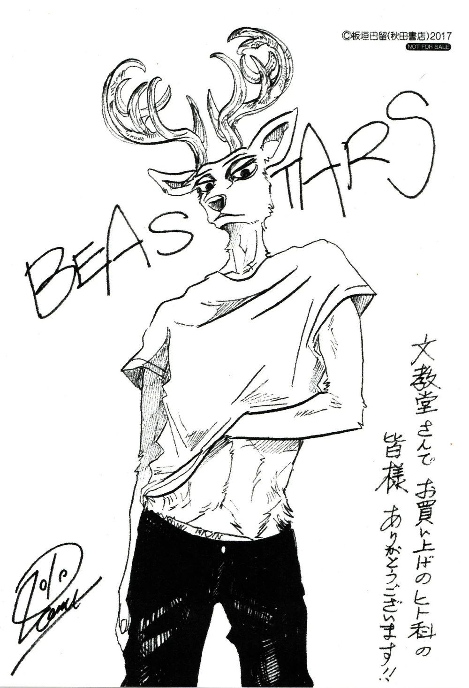
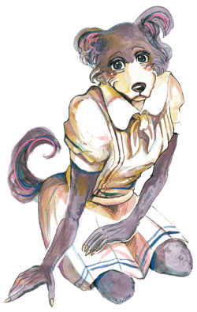
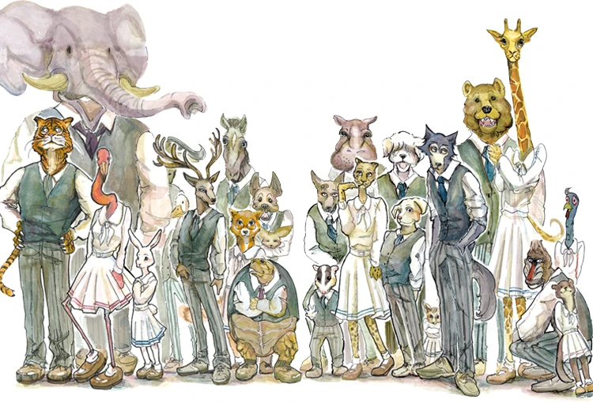
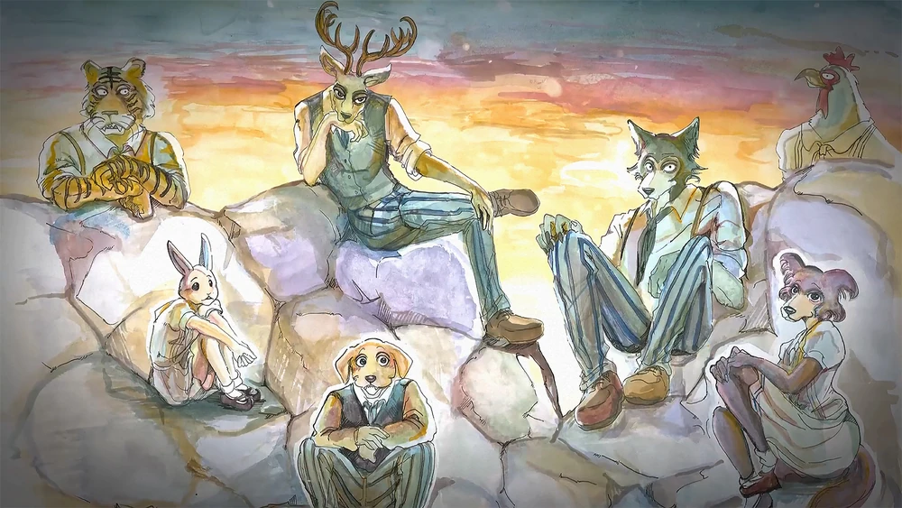
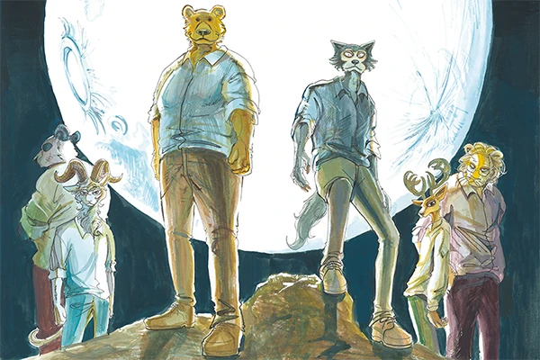
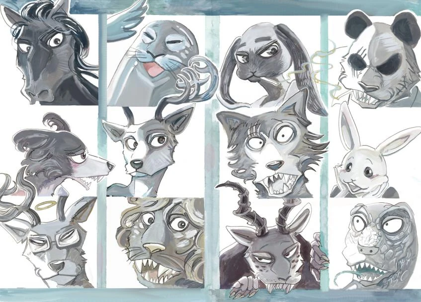
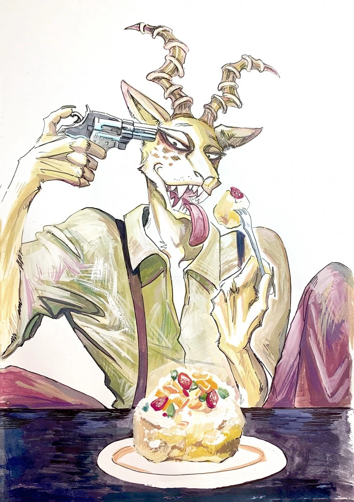

Drama psicológico, Slice of life, Romance, Thriller
¿De qué trata Beastars?
En un mundo donde animales antropomórficos han creado una sociedad civilizada, la tensión entre
carnívoros y herbívoros siguen latentes bajo la superficie. En la prestigiosa escuela secundaria
Cherryton, estas
tensiones explotan cuando Tem, una alpaca del club de teatro, es brutalmente asesinada.
La historia sigue a Legoshi, un lobo gris tímido y gentil que lucha contra sus
instintos
depredadores mientras se enamora de Haru, una pequeña coneja blanca. Esta
relación, socialmente mal vista,
entre carnívoro y herbívoro desata una serie de eventos que explorarán los prejuicios, la
discriminación, y la
naturaleza misma del instinto versus la civilización.
Beastars es mucho más que una historia de animales antropomórficos; es una profunda alegoría
sobre las tensiones
raciales, sociales y personales que enfrentamos en la sociedad moderna, narrada a través de
personajes complejos y
situaciones que van desde lo cotidiano hasta lo visceral.
El Mundo de Beastars
Sociedad Antropomórfica
El mundo de Beastars presenta una sociedad donde los animales han evolucionado para caminar
erguidos, usar ropa y
crear civilizaciones complejas. Sin embargo, mantienen sus características físicas y, lo más
importante, sus
instintos naturales.
División social fundamental:
Carnívoros: Físicamente superiores pero socialmente marginados
Herbívoros: Físicamente vulnerables pero con ventajas sociales
Omnívoros: En una posición intermedia y compleja
Híbridos: Socialmente vistos como una abominación y un tabú. Suelen
disfrazar una de las partes
para pasar desapercibidos
Escuela Cherryton
El epicentro de la historia es esta prestigiosa escuela secundaria que funciona como una muestra
de la sociedad.
Aquí conviven estudiantes de todas las especies, desde pequeños roedores hasta grandes felinos,
creando una dinámica
social única.
Características importantes:
Sistema de dormitorios separados por especie
Club de teatro muestra cómo conviven las diferentes especies, sin importar su clasificación
Regulaciones estrictas sobre comportamiento instintivo
El Mercado Negro
Una zona de la ciudad que es conocida pero no se habla de ella, donde se comercia con carne de
herbívoros. Este elemento
introduce aspectos más maduros y violentos, como la mafia y el sus de sustancias, explorando las
consecuencias de reprimir los instintos
naturales.
Personajes Principales
Legoshi
Lobo Gris - Carnívoro

El personaje principal de la serie. Legoshi es un lobo de 17 años, alto y de apariencia
intimidante, pero con
un corazón gentil y una personalidad tímida. Su lucha interna entre sus instintos de
depredador y su deseo de ser
bueno forma el núcleo emocional de la serie.
Características clave:
Miembro del equipo técnico del club de teatro
Físicamente intimidante pero emocionalmente vulnerable
Lucha constante con sus instintos carnívoros
Se enamora de Haru, una herbívora
Representa la lucha entre naturaleza y civilización
Haru
Coneja Enana Holandesa - Herbívora

Haru es una coneja pequeña y aparentemente frágil, pero posee una
personalidad fuerte y una sexualidad abierta que, aunque tiene un origen complicado, desafía
las expectativas sociales.
Características clave:
Única miembro del club de jardinería
Enfrenta discriminación por su tamaño
Relación compleja con Legoshi
Representa la fuerza en la vulnerabilidad
Louis
Ciervo Rojo - Herbívoro

Louis es un ciervo elegante y carismático, estrella del club de teatro y líder
natural entre los herbívoros. Su historia personal incluye trauma y supervivencia. A lo
largo de la historia, su
participación muestra una relación compleja con los carnívoros, en especial Legoshi.
Características clave:
Actor principal y líder del club de teatro
Personalidad dominante y orgullosa
Representa el herbívoro que desafía su rol de presa
Juno
Loba Gris - Carnívora

Juno es una loba más joven que Legoshi, ambiciosa y segura de sí misma. Representa
inicialmente
lo que se espera socialmente de una carnívora, luego se encuentra con emociones más
complejas que demuestran que no
todo es blanco o negro.
Características clave:
Actriz talentosa del club de teatro
Enamorada de Legoshi
Ambiciosa y políticamente consciente
Quiere ser la próxima Beastar
Arcos Narrativos
Club de drama (Capítulos 1-17)

El arco inicial que establece el mundo y los personajes principales. En
la prestigiosa
Academia Cherryton ocurrió un crimen muy serio: la alpaca Tem fue asesinada por un carnívoro.
Esto desata tensiones
entre carnívoros y herbívoros dentro del club de drama. En medio de esto, Legoshi descubre sus
sentimientos por
Haru.
Elementos clave:
Presentación del mundo y sistema social
Desarrollo de la relación Legoshi-Haru
Exploración inicial de prejuicios y discriminación
Introducción a los instintos y su represión
El Festival del Meteorito y El Drama del Mercado Negro (Capítulos 18-49)

El club es llamado para organizar el Festival del Meteorito, en medio de
las preparaciones,
la tensión aumenta cuando Haru es secuestrada. Louis desaparece en el mercado
negro y Legoshi debe enfrentar las realidades más crudas de su sociedad.
Elementos clave:
Exploración del mercado negro de carne
Desarrollo del carácter de Louis fuera de su zona de comfort
Legoshi entrena para volverse más fuerte
Introducción de la organización criminal Shishi-gumi
Temas más maduros sobre violencia y supervivencia
El Asesino de Tem (Capítulos 50-99)

5 meses después de la muerte de Tem, el caso sigue sin resolverse.
Entonces le toca a
Legoshi decifrar quién fue el asesino. El arco más psicológico de la serie, donde se revela
quien asesinó a Tem.
Explora temas de represión, medicación y la naturaleza de la violencia.
Elementos clave:
Revelación del verdadero asesino de Tem
Exploración de la salud mental en carnívoros
El papel de la medicación en el control de instintos
Temas sobre amistad, perdón y comprensión
Relaciones interespecies (Capítulos 100-123)

Después de resolver el misterio de Tem, la historia se enfoca en las
relaciones románticas
entre especies diferentes. Legoshi y Haru enfrentan los desafíos sociales y personales de su
relación
carnívoro-herbívoro, mientras otros personajes también exploran conexiones prohibidas.
Elementos clave:
Legoshi abandona la escuela y se vuelve vigilante
Desarrollo profundo de la relación Legoshi-Haru
Exploración de la intimidad física entre especies diferentes
Reacciones familiares y sociales a relaciones "tabú"
Introducción de otros casos de relaciones interespecies
Melon (Capítulos 124-196)

El arco final, considerado uno de los arcos más oscuros y
psicológicamente intensos de la
serie. Sigue a los personajes en su transición a la vida adulta y nos introduce a a Melon, un
híbrido de leopardo y
gacela que representa todo lo que la sociedad teme sobre las relaciones interespecies. Su
naturaleza conflictiva y
métodos violentos desafían tanto a Legoshi como a los fundamentos de la sociedad.
Elementos clave:
Introducción de Melon como antagonista principal
Exploración de los híbridos y su lugar en la sociedad
Temas sobre identidad fragmentada y pertenencia
Evolución final de la relación Legoshi-Haru
Reflexión sobre el cambio social y personal
Temas Profundos
Prejuicio y Discriminación
Beastars usa la división carnívoro-herbívoro como una alegoría poderosa sobre el racismo y la
discriminación. Los
carnívoros enfrentan sospecha constante, mientras los herbívoros viven con miedo perpetuo.
Manifestaciones en la obra:
Estereotipos sobre carnívoros "peligrosos"
Privilegios sociales para herbívoros
Relaciones interespecie vistas como tabú
Instinto vs. Civilización
El conflicto central de la serie: ¿qué sucede cuando los instintos naturales chocan con las
expectativas sociales?
Los personajes luchan constantemente entre su naturaleza animal y su identidad civilizada.
Ejemplos en la narrativa:
Legoshi reprimiendo sus instintos de caza
Haru usando su sexualidad como supervivencia
Louis rechazando su naturaleza de presa
Riz medicándose para controlar su agresividad
Adolescencia y Autodescubrimiento
En el centro de la serie está la experiencia universal de crecer, descubrir la identidad y
enfrentar la sexualidad
emergente, todo magnificado por la dinámica depredador-presa.
Aspectos desarrollados:
Despertar sexual y romántico
Presión social y expectativas familiares
Búsqueda de identidad personal
Amor y Relaciones Prohibidas
Las relaciones entre especies diferentes, especialmente carnívoro-herbívoro, sirven como metáfora
para cualquier
relación vista como "prohibida" por la sociedad.
Dinámicas exploradas:
Amor que desafía normas sociales
Peligro inherente en la intimidad
Aceptación familiar y social
Compromiso y sacrificio en relaciones difíciles
¿Por qué ver Beastars?
Beastars trasciende su premisa aparentemente simple para convertirse en una obra relevante en el
manga contemporáneo. A través de su mundo de animales antropomórficos, Paru Itagaki
creó una alegoría poderosa sobre la sociedad moderna, explorando temas de discriminación, identidad,
adolescencia y las tensiones entre nuestra naturaleza instintiva y nuestras aspiraciones
civilizadas.
La obra destaca por su capacidad de abordar temas complejos sin simplificarlos, presentando
personajes multidimensionales que enfrentan dilemas morales genuinos. No hay villanos absolutos ni
héroes perfectos, solo individuos tratando de navegar un mundo complicado donde sus naturalezas
internas a menudo chocan con las expectativas externas.